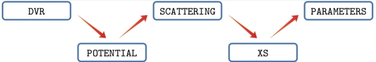

BIGOS – Binary Inelastic scattering and Generalized Optical cross Section package, vs. 0.01
the SCATTERING code
BIGOS – Binary Inelastic scattering and Generalized Optical cross Section package is a set of FORTRAN 90 codes that allow the user to obtain various physical quantities related to the scattering problem involving diatomic molecules and atoms. The package is being developed at the Nicolaus Copernicus University in Toruń.

Here, we present the SCATTERINC code, the central part of the BIGOS package. The purpose of the SCATTERING code is to solve the coupled equations for a given scattering system, provide the scattering S-matrix elements and calculate the state-to-state cross-sections.
Please read the Program Description.
in particular the H2 - He system.
Please, refer to this version of the code by citing the following paper
H. Jozwiak, F. Thibault, A. Viel, P. Wcislo, F. Lique,
Rovibrational (de-)excitation of H2 by He revisited
https://doi.org/10.48550/arXiv.2311.09890
Hubert Jóźwiak
Institute of Physics,
Faculty of Physics, Astronomy and Informatics,
Nicolaus Copernicus University in Toruń,
Grudziadzka 5, 87-100 Toruń,
Poland
Contact: hubert.jozwiak@doktorant.umk.pl

Source Files
- array_operations_add_scalar_to_diagonal_submod.f90
- array_operations_allocate_submod.f90
- array_operations_append_submod.f90
- array_operations_fill_symmetric_matrix_submod.f90
- array_operations_invert_symmetric_matrix_submod.f90
- array_operations_mod.f90
- boundary_conditions_mod.f90
- centrifugal_matrix_mod.f90
- channels_mod.f90
- global_variables_mod.f90